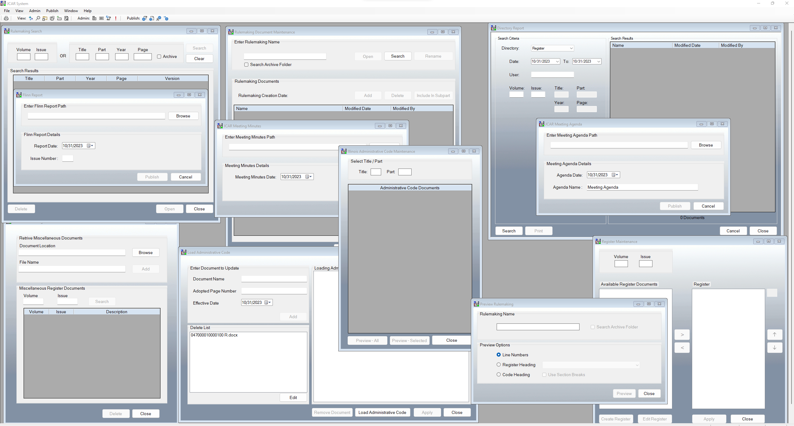

"Parking Management"
I created a user-friendly C# and WPF desktop app for vehicle registration and management, specifically tailored for the State of Illinois. This app, functioning similarly to Ticketmaster, enhances the user experience with Balsamiq wireframes. As the team lead, I oversaw development, maintenance, and ensured comprehensive bug and requirement tracking. Leveraging SQL for robust data storage, the app streamlines vehicle registration and management, offering efficiency and visual appeal. Ongoing updates are planned to meet evolving user needs.

"The Joint Committee Rules Management Aplication"

I designed, developed, and tested an efficient C# Windows Forms desktop application for rule review and data collection for JCAR (Joint Committee on Administrative Rules, State of Illinois). As the lead developer, I managed precise amendment tracking, user-friendly feature implementation, and ongoing maintenance. The app streamlines the data collection process, enhancing efficiency and accuracy. It significantly improved the rule review process and remains under regular maintenance for reliability
"Chamber Voting System Admin Aplication"
I played a key role in the development of the Chamber Voting System Admin App, utilizing VB.NET, XAML, and Windows Forms. This app efficiently manages administrative tasks, streamlining bill and member management processes. I oversaw development, maintenance, feature implementation, and resolution of any encountered bugs, ensuring the system's smooth operation.
"Voting Service that Runs House of Representative Applications in Illinois General Assembly"

I have played a pivotal role in the development, design, testing, and ongoing support of a suite of 17 interconnected applications that collectively drive the House Chamber Voting Service. These applications work harmoniously to provide essential functions for the House of Representatives, encompassing audio and video management, bill updates, and the secure implementation of a Laptop Voting System. My contributions include not only creating and supporting these applications but also continuously enhancing their features and addressing issues and tickets, ensuring the seamless operation of this intricate network of applications.
"Voting Service that Runs Senate Application in Illinois General Assembly"
I actively contributed to the development, support, and feature enhancements for a suite of 15 interconnected applications powering the Senate's critical functions. This included work on applications such as Offsite Chamber Display,Offsite Floor Layout, Offsite Floor Leadership, and more, involving change requests and production bill implementation. My role ensured the smooth operation of these essential Senate components, enhancing their functionality and support.
"Ecommerce buying selling Products"

I leveraged JavaScript, Java, C#, and HTML to create a dynamic e-commerce website with striking similarities to Amazon. My role encompassed the development of applications and websites for small businesses, with a primary focus on ensuring client satisfaction. The resulting website closely mirrors Amazon's extensive offerings, providing a versatile platform for selling a wide range of products
I developed and maintained the CVS Monitoring System for House and Senate members, leveraging VB.NET. This application offers efficient and comprehensive monitoring capabilities, and I played a key role in continuously enhancing and upgrading its features to meet the evolving needs of legislative members in both the House and the Senate.